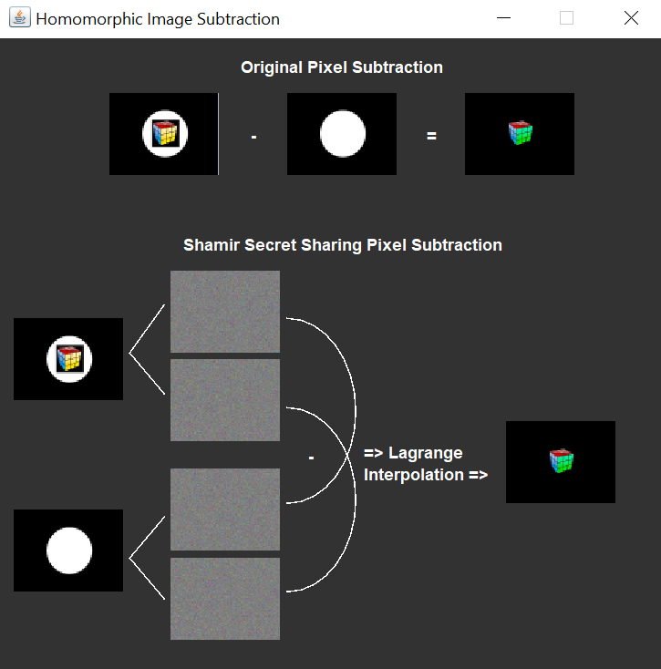

Summary
For homomorphic image encryption, the user can either choose two images from their personal storage or two sample
images from the provided directory, named "images", included in the ZIP file. Shares are created from these images
on which a user-chosen homomorphic encryption method is used (addition or subtraction). The results from these share
operations are then used to reconstruct the secret image, which is either the sum of the pixels from the image inputs
or their difference. Users can view the images in larger formats by navigating through the provided directories.
